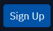

Welcome to the Exciting World of Python!
This guide will equip you with the knowledge to set up Python on Replit, an online platform that allows you to code, run, and share your Python projects without needing any installations. Buckle up, and get ready to embark on your programming journey!
1. Create a Replit Account (Optional)
While not mandatory, creating a Replit account allows you to save your projects and access them from anywhere. Head over to https://replit.com/ and click on  to create a free account.
- You may use your school email account or your own Google email.
2. Create a New Python Repl
- Go to https://replit.com/ and click on "+ Create Repl."
- In the "Template" section, search for "Python" and select it.
- Click on "Create Repl."
Congratulations! You've just created your first Python environment in Replit.
3. Exploring the Interface
Left Panel:
- Files: This section shows your project files. Initially, you'll see a single file named
main.py. - Dependencies: This allows you to install additional Python libraries if needed.
- Console: This is where you'll see the output of your code and interact with your programs.
- Shell: This grants access to the underlying command line for more advanced tasks (not required for basic learning).
Right Panel:
- Code Editor: This is where you'll write your Python code.
4. Write Your First Python Code
Open the main.py file in the code editor and paste the following code:
```python print("Hello, world!")